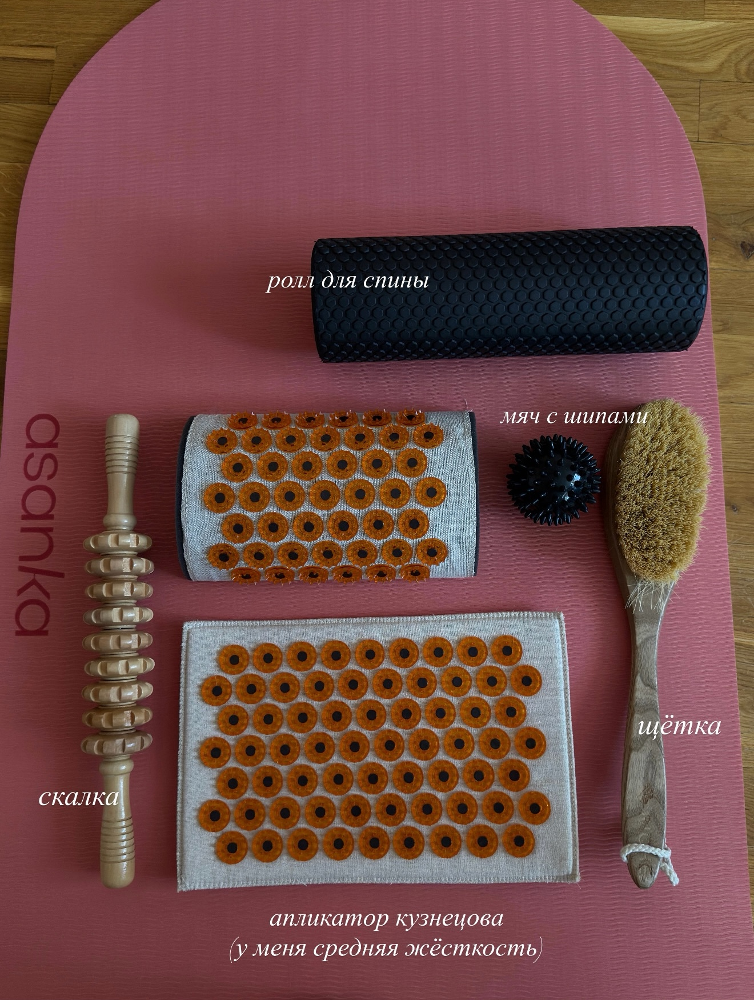

Лёгкая база
Огурцы, помидоры, зелень, кабачки, капуста, брокколи, грибы, вода, чай и кофе без добавок
Коротко и по делу
Выбирай тему под день: быстро проверить продукт, разобраться со срывом, отёками, циклом, базой или БАДами
Материалы короткие: без сухой теории, с понятной пользой и действиями, которые можно применить сегодня
Введи продукт и быстро пойми: считать, не считать или быть аккуратнее
Где ломается система “запретила — сорвалась — снова запретила”
Почему появляется “апельсиновая корочка” и как работать с ней без паники
Протеин, креатин, BCAA, омега-3 и витамин D: что это и как выбирать
Новый материалТренировки, питание, цикл и восстановление: всё важное про задержку воды
Новый материалКак учитывать самочувствие, тренировки, питание и восстановление в разные фазы
Введи продукт и пойми, считать его или нет. Это быстрый ориентир для ежедневных решений, а не строгий запрет
Быстрый ориентир для ежедневных решений: когда можно расслабиться, а где лучше учесть порцию
Огурцы, помидоры, зелень, кабачки, капуста, брокколи, грибы, вода, чай и кофе без добавок
Крупы, хлеб, паста, картофель, батат, кукуруза, свекла, морковь, бобовые, мясо, рыба, яйца, творог
Масла, орехи, семечки, авокадо, оливки, жирные соусы, сладкое, сухофрукты, соки, алкоголь, фастфуд
Обычно кажется: “я просто не выдержала”, но чаще срыв начинается намного раньше — когда весь день терпела, запрещала и пыталась быть идеальной
Срыв часто выглядит как проблема сладкого или “слабой силы воли”, но обычно перегружается вся система: мало еды, много запретов, усталость, стресс и мысль “теперь уже всё испорчено”
Телу сложно держаться на голоде
Любое отклонение ощущается как конец системы
После срыва хочется наказать себя жёстче
Проблема не в том, что тебе “не хватает дисциплины”. Проблема в системе, где слишком много запретов, голода и чувства вины.
Спокойное питание строится не через боль и наказание, а через заботу к себе: можно съесть торт или бургер, вернуться к балансу и не загонять себя в режим “теперь всё идеально”
На курсе мы учимся выстраивать питание спокойнее: с регулярными приёмами пищи, насыщением, гибкостью и без наказания после сложного дня
Один неидеальный день не нужно отрабатывать голодом. Выбери ближайший спокойный шаг и продолжай режим без наказания.
Назови факт спокойно: был неидеальный прием еды или день. Это не отменяет курс, прогресс и право продолжать без наказания.
Верни обычный завтрак, воду и 10-20 минут мягкой ходьбы. Не начинай день с голода, весов и попытки “исправить” вчера.
Собери ближайшую тарелку: белок, гарнир и овощи. Режим возвращается через следующий нормальный прием пищи, а не через новый запрет.
Не объявляй сладкое врагом. На следующий прием добавь белок и углеводы: творог с фруктом, яйца с хлебом или курицу с рисом.
Оставь сладкое после еды, а не вместо еды: например, десерт после обеда 2-3 раза в неделю. Так оно перестает быть “последним шансом”.
Выбери, что произошло, почему это могло случиться, и получи конкретные шаги на сейчас и завтра
Вес, кольца, следы от носков и отражение в зеркале могут меняться даже при правильном питании и тренировках. Разбираемся без паники и крайностей
После тренировки и в разные дни цикла тело может выглядеть по-разному. Это не повод оценивать прогресс по одному утру
Припухлость, следы от одежды, колец или носков, ощущение тяжести
Ощущение объёма и дискомфорта преимущественно в животе
Временная наполненность мышц кровью и жидкостью после нагрузки
Вода, содержимое ЖКТ и запасы гликогена, а не только изменение жировой массы
Что заметишь: мышцы выглядят плотнее, есть крепатура или локальная припухлость
Почему: после непривычной нагрузки ткани восстанавливаются и временно удерживают больше жидкости
Что поможет: обычное питание, спокойное движение и время на восстановление
Раннее увеличение объёма мышц после старта силовых частично может быть связано не с ростом мышечной ткани, а с восстановительным отёком. Это временная реакция, поэтому прогресс лучше сравнивать по неделям, а не на следующее утро
Что заметишь: вес меняется после более углеводного дня, мышцы выглядят наполненнее
Почему: мышцы запасают углеводы в форме гликогена вместе с водой
Что поможет: не устраивать резкие качели и сохранить привычный рацион
Когда запасы гликогена пополняются, вместе с ними возвращается вода. Это нормальная часть спортивного восстановления, а не набор жира за один день
Что заметишь: жажда, тяжесть, изменение веса после жаркого или солёного дня
Почему: организму приходится заново выравнивать баланс жидкости и электролитов
Что поможет: стабильный режим без полного отказа от соли и без воды через силу
Скорость потоотделения у всех разная, поэтому универсальная норма воды не подходит каждой спортсменке. Ориентируйся на жажду, условия тренировки и рекомендации курса
Что заметишь: вздутие, тяжесть, следы от колец или временный плюс на весах
Почему: перед менструацией самочувствие и распределение жидкости могут меняться
Что поможет: сравнивать состояние с той же фазой прошлого цикла, а не со вчерашним днём
Отмечай фазу цикла вместе с ощущениями два-три месяца. Личная повторяемость полезнее универсального календаря, потому что реакции отличаются
Что заметишь: тяжесть в ногах и более заметные следы от носков к вечеру
Почему: при долгом сидении мышцы ног меньше помогают движению крови и жидкости
Что поможет: короткие перерывы на ходьбу и удобная одежда без сильного давления
Что заметишь: тяжесть, усталость и ощущение, что тело выглядит непривычно
Почему: недосып, стресс и алкоголь меняют привычный режим питания, воды и восстановления
Что поможет: вернуть базовые привычки и не делать вывод по одному сложному дню
Этот материал не меняет расписание и упражнения курса
Без обезвоживания и воды через силу
Без голода и резких качелей углеводов
Прогрессия по программе, а не рывками
Короткая ходьба после долгого сидения
Сравнение повторяющихся условий, а не случайных дней
Резкое ограничение жидкости не решает причину и может ухудшить самочувствие. Верни привычный режим без крайностей
Соль участвует в водно-электролитном балансе. Важнее стабильность рациона, а не полный запрет
После пополнения гликогена вместе с ним удерживается вода. Это не равно набору жира за один день
Дополнительная нагрузка не нужна как наказание. Продолжай программу и возвращай обычный режим
Пот показывает работу охлаждения, а не количество сгоревшего жира
Они не решают спортивную задачу и могут нарушить баланс жидкости и электролитов
На вес влияют вода, гликоген, пища и восстановление. Смотри на тренд за несколько недель

Эти инструменты я использую как мягкий способ расслабиться и добавить движения, а не как лечение отёков
Всё делаю без боли, синяков и сильного давления, не использую на раздражённой коже
Сравним изменения тела с тренировками, сном, циклом, питанием, жарой и долгим сидением
Трекер сравнивает твои записи, но не ставит диагноз
О теле, режиме воды и самочувствии
Короткий план без борьбы с телом: что влияет на рельеф кожи, с чего начать и как не навредить
Два быстрых блока, которые удобно держать под рукой каждый день
Это не список “идеального дня”, а мягкая опора: вода, питание, шаги, уход и поверхностная работа
Вода не “смывает целлюлит”, но нормальный питьевой режим помогает не усиливать задержку жидкости
Выбери, что сильнее всего мешает рельефу кожи сейчас — вода, движение, питание или регулярность
Обычно влияет не один фактор, а сочетание привычек, воды, движения и особенностей тела
Поэтому работаем не одной банкой крема, а понятной связкой: режим, движение и мягкий уход
Это маршрут на ближайшие недели: без рывков, но с понятными повторяемыми шагами
Белок в 2-4 приёмах пищи, овощи или клетчатка, нормальные углеводы и вода
Цель — стабильность, регулярная еда и спокойный режим без жёстких откатов
Силовые по курсу помогают телу становиться плотнее и визуально собраннее
В дни без тренировки оставляем шаги, прогулку или лёгкую активность
Сухая щётка и спокойная техника помогают с кровообращением, ощущением кожи и регулярным уходом
Работаем мягко: без боли, синяков и попытки “стереть” кожу
Сначала разберём, зачем он нужен, а потом — какую щётку взять, когда делать и как пройти бёдра и ягодицы
Сухая щётка не “убирает целлюлит”, но помогает поддержать кожу и сделать уход регулярным
Лучше всего — щётка с натуральной щетиной, не слишком жёсткая и не царапающая кожу
Если кожа чувствительная, бери мягкую щётку или перчатку-варежку
Вариант 1: до тренировки на ягодицы, чтобы разогреть кожу
Вариант 2: после тренировки для восстановления, но только когда кожа сухая
Ориентир — 10-15 минут на весь массаж
Для бедра и ягодицы можно держать по 5-7 минут, если коже комфортно
После сухой щётки кожа уже механически простимулирована, поэтому активные разогревающие средства могут дать раздражение и красноту
Крем или лосьон для тела с мягкими компонентами: пантенолом для успокоения, церамидами для кожного барьера, глицерином или гиалуроновой кислотой для увлажнения, скваланом или маслами для смягчения, алоэ для чувствительной кожи
 перчатка
перчатка
Мягкий вариант для чувствительной кожи и аккуратного массажа в душе
 щётка
щётка
Натуральная щетина и длинная ручка: удобно работать по бёдрам, ягодицам и трудным зонам
 уход
уход
После душа нанеси крем для тела MIXIT Lactocream: он увлажняет кожу после щётки и не перегружает её скрабом
Если день разваливается, не нужно спасать всё идеально. Верни базу — этого уже достаточно, чтобы не откатиться
Полное руководство по нагрузке, питанию и восстановлению без жёстких правил и попытки подогнать каждую девушку под один календарь
Энергии может быть меньше, особенно если есть боль, слабость или обильные выделения. Но обязательного запрета на тренировки нет
Если привычные веса, бег или высокоинтенсивное кардио ощущаются тяжелее, снизь темп, рабочий вес или объём. При выраженной боли и слабости выбери отдых
Во время менструации организм теряет кровь и железо. Поддерживай регулярное питание, добавляй продукты с железом и пей в привычном режиме, ориентируясь на жажду
Снижение мотивации и перепады настроения возможны. Это не слабость и не повод ругать себя — оценивай состояние и выбирай посильную нагрузку
После менструации некоторым девушкам легче тренироваться и восстанавливаться, но это возможность наблюдать за собой, а не обещанный пик
Если чувствуешь силы и хорошо восстанавливаешься, можно увереннее работать по программе, осваивать прогрессию и сохранять более энергичный темп
Белок и сложные углеводы нужны в течение всего цикла. Крупы, макароны, хлеб, картофель и другие привычные продукты помогают поддерживать тренировочную работу и восстановление
Если появляется желание ставить цели и пробовать новое, используй его без резкого скачка нагрузки. План и техника важнее календарного энтузиазма
У некоторых энергия остаётся высокой, у других заметной разницы нет. Не нужно специально планировать рекорд только по календарю
Силовая тренировка, интенсивная работа, бег или спринты допустимы, если они есть в плане и тело к ним готово. Личный рекорд — результат подготовки, а не обязательное свойство фазы
Данные о резком росте риска травм в овуляцию неоднозначны. Не нужно бояться движения, но разминка, контроль техники и постепенный рост веса важны в любой день цикла
Оставляй белок, достаточное количество углеводов и регулярные приёмы пищи. Пей по жажде и учитывай жару, длительность тренировки и потоотделение без попытки выпить как можно больше
Перед менструацией могут появляться отёки, голод, усталость и тяга к более спокойному режиму. Эти ощущения бывают не у всех и могут меняться от цикла к циклу
Выносливость иногда ощущается ниже, жидкость задерживается заметнее, а аппетит усиливается. Это временные изменения, а не потеря формы или дисциплины
Если обычная нагрузка даётся тяжелее, работай в умеренном темпе и согласуй корректировку с рекомендациями курса
Не нужно резко убирать соль или пить воду через силу. Сохраняй стабильный рацион, добавляй источники полезных жиров и магния из обычных продуктов
Перепады настроения, усталость и снижение мотивации возможны. Не ругай себя и не компенсируй это наказанием тренировкой или ограничением еды
Разбираем баночки с @qmellz

Советую Сывороточный или Растительный